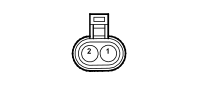

I020 REVERSING LIGHTS SWITCH (FRONT)
- Path
- Electrical equipment > 3 CONNECTORS > I SWITCHES > I020 REVERSING LIGHTS SWITCH > I020 REVERSING LIGHTS SWITCH (FRONT)
- Kind
- connector pinout (pin -> wire colour -> other end)
- Applies to
- engines: 1.2 8v; all production periods; only with equipment: Smart gearbox
- Interactive page
- https://sloeber94.github.io/elrnDB-fPnd/en/#/169003243
Applies to: engines: 1.2 8v; all production periods; only with equipment: Smart gearbox

Wiring | Colour |
|---|---|
NERO (black) |
Pin | Cable | Destination | |||
|---|---|---|---|---|---|
Sec.. | Colour | Node | Connect. | Pin | |
1 | 0,5 | AN (light blue with black stripe) | 1 | ||
2 | 0,5 | B (white) | 1 | ||